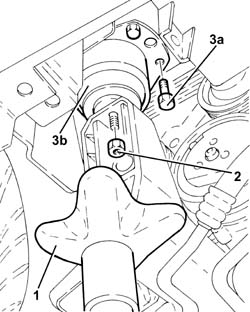
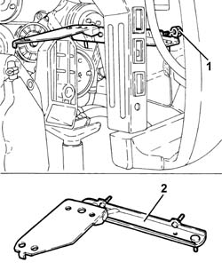
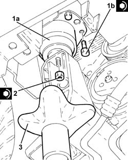

1084C10 Engine oil cooling RADIATOR mounting BRACKET - R.R.
- Path
- Procedures > 10 ENGINE > 1084 ENGINE LUBRICATION SYSTEM > 1084C engine oil cooling circuit > 1084C10 Engine oil cooling RADIATOR mounting BRACKET - R.R.
- Kind
- repair procedure (removal / refitting; the operation number is the code)
- Applies to
- engines: 3.2 V6; all production periods
- Interactive page
- https://sloeber94.github.io/elrnDB-a156/en/#/3237619
Applies to: engines: 3.2 V6; all production periods
 Removing
Removing
 Refitting
RefittingPosition the vehicle on the ramp.
Proceed with removal 7055B54 under-engine guard - r r .
Proceed with removal 1084C34 engine oil cooling radiator - r + r .
1. Position a hydraulic jack under the rigid power unit support, timing side.
2. Undo the nut fixing the timing side rigid engine support to the flexible mounting.
Lower the hydraulic jack as much as necessary to release the rigid engine support, timing gear side, from the flexible block.
3. Undo the bolts (3a) and remove the flexible block for the propulsion unit front support.

Applies to: engines: 3.2 V6; all production periods
1. Undo the nut securing the engine oil cooling radiator mounting bracket to the duct.
2. Remove the engine oil cooling radiator mounting bracket.

Applies to: engines: 3.2 V6; all production periods
Refitting
RemovingPlace the engine oil cooling radiator mounting bracket in its seating and fix it with the nuts to the duct.
1. Place the flexible mounting for the power unit front support (1a) back in its housing and secure it by tightening the bolts (1b) to the recommended torque.
 | Fastening | Component | Ø | Value (daNm) |
|---|---|---|---|---|
1b | Bolt | FRONT RUBBER MOUNTS | M8 | (Bodyshell side) 3.1 - 3.8 |
Using the hydraulic jack, connect the engine rigid support, timing gear side, to the flexible block.
2. Tighten the nut securing timing side rigid engine support to the flexible mounting to the recommended torque.
| Fastening | Component | Ø | Value (daNm) |
|---|---|---|---|---|
2 | Nut | FRONT RUBBER MOUNTS | M10 | (Rigid support side) 42 ÷ 5.1 |
3. Remove the hydraulic jack under the rigid power unit support, timing side.

Applies to: engines: 3.2 V6; all production periods
Proceed with refitting 1084C34 engine oil cooling radiator - r + r .
Proceed with refitting 7055B54 under-engine guard - r r .
Refill the engine oil lubrication system 1084A10 ENGINE OIL - Check level and top up, if necessary .
Remove the car from the ramps.